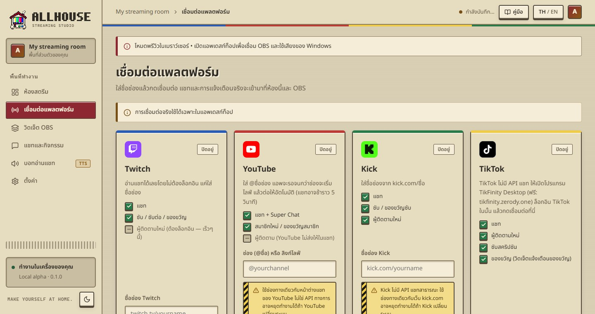

ใส่ชื่อช่องแล้วกดเชื่อมต่อ แชทและการแจ้งเตือนจริงจะเข้ามาที่ห้องแชทและ OBS แอพจำไว้และต่อให้เองทุกครั้งที่เปิด

| แพลตฟอร์ม | ใส่อะไร | แชท | สมาชิก/ซับ | ผู้ติดตาม | ของขวัญ |
|---|---|---|---|---|---|
| Twitch | ชื่อช่อง เช่น twitch.tv/ชื่อ | ✓ | ✓ | เร็วๆ นี้ (ต้องล็อกอิน) | — |
| YouTube | @ชื่อช่อง หรือลิงก์ไลฟ์ | ✓ + Super Chat | ✓ สมาชิก | YouTube ไม่ส่งให้ | — |
| Kick | ชื่อช่อง kick.com/ชื่อ | ✓ | ✓ | ✓ | — |
| TikTok | เปิด TikFinity ไว้ แล้วกดเชื่อมต่อ | ✓ | ✓ | ✓ | ✓ |
ใส่ชื่อช่อง (ที่อยู่หลัง twitch.tv/) แล้วกดเชื่อมต่อ ไม่ต้องล็อกอิน อ่านแชทและการซับ/ซับต่อ/ของขวัญซับได้ทันที การแจ้งเตือนผู้ติดตามใหม่ของ Twitch ต้องล็อกอิน จะเปิดให้ใช้ในรุ่นถัดไป
ใส่ @ชื่อช่อง ถ้ายังไม่ได้เริ่มไลฟ์ แอพจะรอแล้วต่อให้เองเมื่อช่องเริ่มไลฟ์ หรือใส่ลิงก์ไลฟ์ตรงๆ ก็ได้ แชทอาจช้ากว่าจริงประมาณ 5 วินาที
YouTube ไม่มีช่องทางอ่านแชทสำหรับแอพในเครื่องแบบง่าย Allhouse ใช้ช่องทางเดียวกับหน้าต่างแชทของ YouTube (ไม่ใช่ API ทางการ) อาจหยุดทำงานได้ถ้า YouTube เปลี่ยนระบบ
ใส่ชื่อช่องจาก kick.com/ชื่อ ได้ทั้งแชท ซับ ของขวัญซับ และผู้ติดตามใหม่
Kick ไม่มี API แชทสาธารณะ Allhouse ใช้ช่องทางเดียวกับเว็บ kick.com อาจหยุดทำงานได้ถ้า Kick เปลี่ยนระบบ
http://localhost:19325/kick/callback และติ๊กแค่ Read user information, Read channel information, Update channel information (ห้ามติ๊ก Read stream key)TikFinity ส่งข้อมูลมาให้เฉพาะตอนที่บัญชีไลฟ์อยู่ ถ้ายังไม่ได้ไลฟ์ สถานะจะ “เชื่อมแล้ว” แต่ยังไม่มีแชทเข้ามา เป็นเรื่องปกติ
ปิดอยู่ยังไม่ได้เชื่อม หรือกดตัดการเชื่อมต่อแล้วกำลังเชื่อม…กำลังติดต่อแพลตฟอร์มเชื่อมแล้วรับข้อมูลได้ จอเขียวบอกช่องที่ต่ออยู่และจำนวนรายการที่รับมากำลังลองใหม่หลุดหรือยังไม่ได้ไลฟ์ แอพจะลองใหม่เองทุก 2–60 วินาทีเชื่อมไม่ได้ชื่อช่องผิดหรือไม่มีช่องนี้ แก้ชื่อแล้วกดเชื่อมต่อใหม่Allhouse 0.1.0 · Local alpha · คู่มือนี้อยู่ในเครื่องของคุณ เปิดได้โดยไม่ต้องใช้อินเทอร์เน็ต
 MANUAL
MANUAL